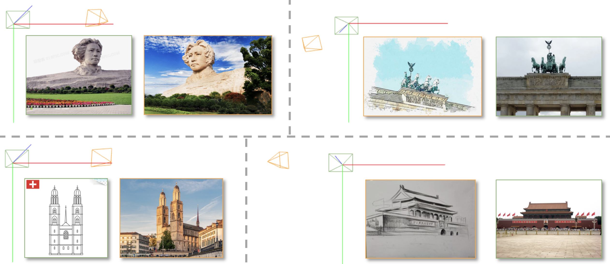
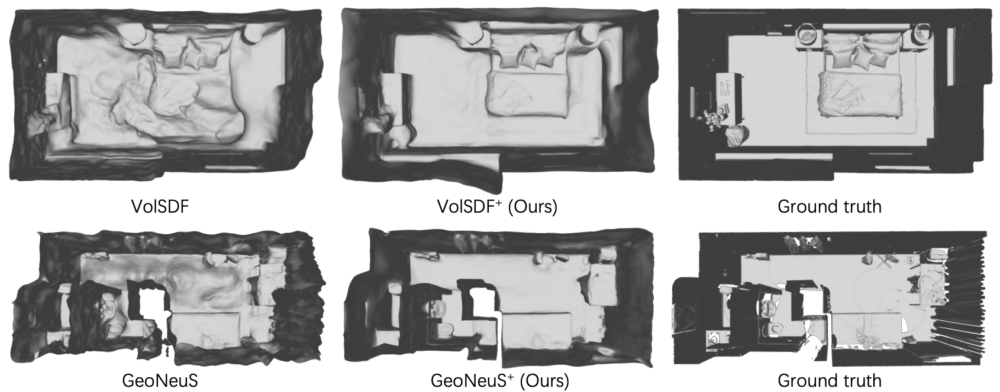
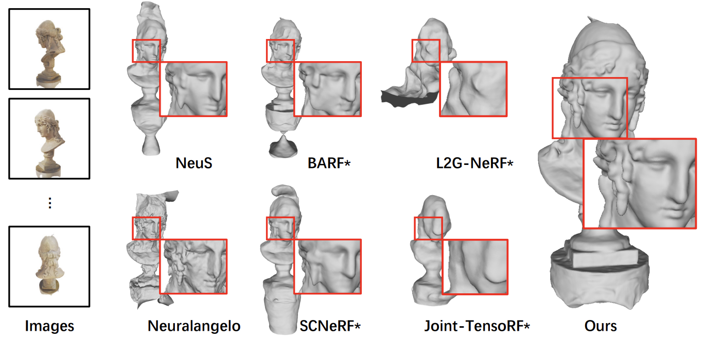
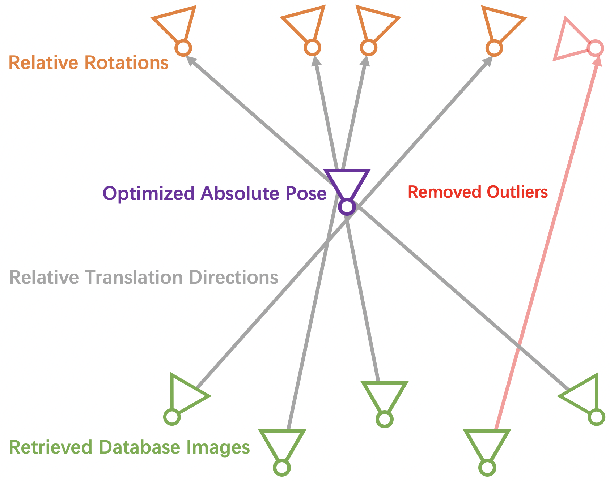
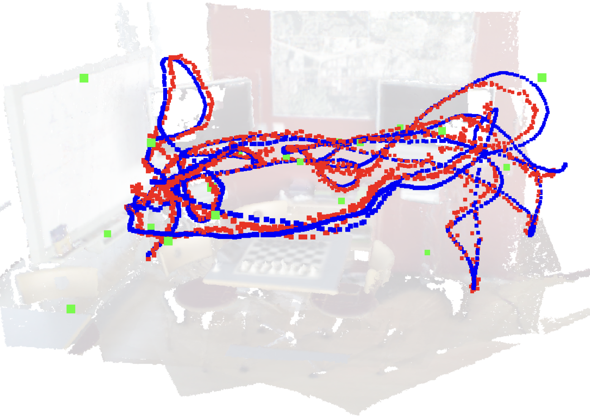
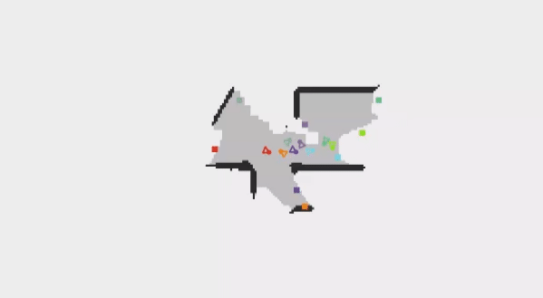
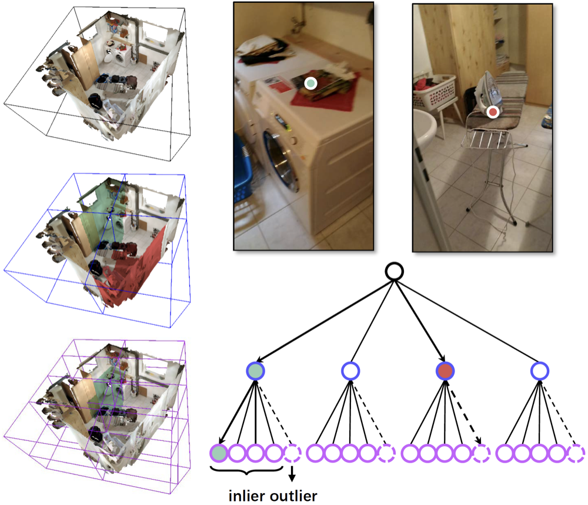
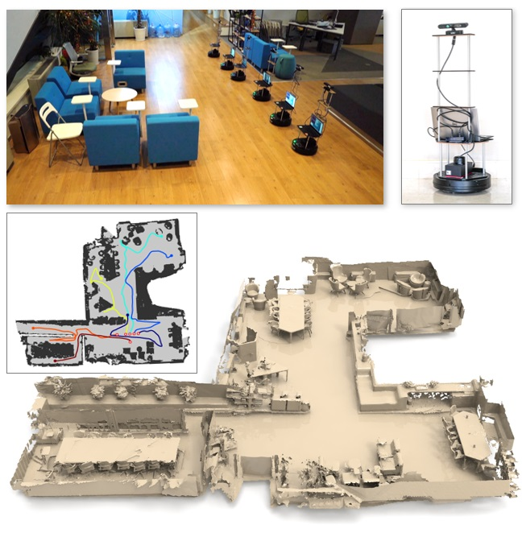

Siyan Dong, Zijun Wang, Lulu Cai, Yi Ma, Yanchao Yang
ICRA 2026
Paper / Code

Yuzheng Liu*, Siyan Dong*†, Shuzhe Wang, Yingda Yin, Yanchao Yang†, Qingnan Fan, Baoquan Chen†
CVPR 2025 (Highlight) / Award: China3DV 2025, Top1 paper
Paper / Code / Video

Siyan Dong*, Shuzhe Wang*, Shaohui Liu, Lulu Cai, Qingnan Fan, Juho Kannala, Yanchao Yang
CVPR 2025
Paper / Code / Video

Xulong Wang*, Siyan Dong*, Youyi Zheng, Yanchao Yang
ECCV 2024
Paper / Code

Yiyang Chen*, Siyan Dong*, Xulong Wang, Lulu Cai, Youyi Zheng, Yanchao Yang
ECCV 2024
Paper / Code

Siyan Dong*, Shaohui Liu*, Hengkai Guo, Baoquan Chen, Marc Pollefeys
Technical Report

Siyan Dong*, Shuzhe Wang*, Yixin Zhuang, Juho Kannala, Marc Pollefeys, Baoquan Chen
3DV 2022
Paper / Code / Video

Qihang Fang, Yingda Yin, Qingnan Fan, Fei Xia, Siyan Dong, Sheng Wang, Jue Wang, Leonidas Guibas, Baoquan Chen
ECCV 2022
Paper / Code / Video

Kai Ye*, Siyan Dong*, Qingnan Fan, He Wang, Li Yi, Fei Xia, Jue Wang, Baoquan Chen
CVPR 2022
Paper / Code / Video

Siyan Dong*, Qingnan Fan*, He Wang, Ji Shi, Li Yi, Thomas Funkhouser, Baoquan Chen, Leonidas Guibas
CVPR 2021 (Oral)
Paper / Code / Video / Poster

Siyan Dong, Kai Xu, Qiang Zhou, Andrea Tagliasacchi, Shiqing Xin, Matthias Nießner, Baoquan Chen
SIGGRAPH 2019 / ACM Transactions on Graphics (TOG)
Paper / Code